This notebook provides an example of using the Materials Knowledge System (MKS) to compute the local strain field of a composite material. The notebook first provides some background information on linear elasticity as well as the boundary conditions of the example. Sfepy was used to compute the calibration and the validation datasets. The notebook then demonstrates the functions and processes need to calibrate and validate the MKS frame for a material system.
The constitutive equation that describes the linear elastic phenomena is Hook’s law.
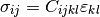
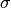 is the stress, 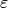 is the strain, and is the stiffness tensor that relates the stress to the strain. For an isotropic material the stiffness tensor can be represented by lower dimension terms which can relate the stress and the strain as follows.
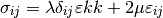
$ $ and 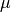 are the first and second lam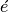
parameters and can be defined in terms of the Young’s modulus 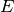
and Poisson’s ratio  .
.
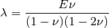
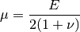
Strain is related to displacement using the following equation.
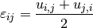
Plugging the equation above back into our expression for stress, we get an equation that relates displacement to stress.
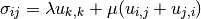
The equilibrium equation is defined as
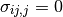
and can be cast in terms of displacement as follows.
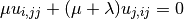
In this example, a displacement controlled simulation is used to calculated the strain and the following boundary conditions for square box of length 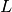 and macroscopic strain 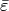 are imposed.
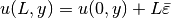
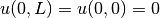

In this example, the an instance of the class ElasticFEModel is used to generate both the calibration strain response field to fit the MKS model and the validation strain response field used to evaluate the MKS model’s accuracy. The class utilizes the module Sfepy to calculated the local response strain field though finite element methods. More information can be found their website.
%matplotlib inline
%load_ext autoreload
%autoreload 2
import numpy as np
import matplotlib.pyplot as plt
E1 = 80 #Young's modules for material 1
E2 = 120 #Young's modules for material 2
nu1 = 0.3 #Poisson's ratio for material 1
nu2 = nu1 #Poisson's ratio for material 2
def getDelta((nx, ny)):
X = np.zeros((2, nx, ny))
X[0, (nx - 1) / 2, (ny - 1) / 2] = 1
X[1] = np.abs(X[0] - 1)
return X
def getProp(X):
X_prop = np.zeros((X.shape + (2,)))
X_prop[...,0] = np.where(X == 1, E2, E1)
X_prop[...,1] = np.where(X == 1, nu2, nu1)
return X_prop
def getPlot(X, title='title', fontsize=20):
plt.figure()
plt.imshow(X, interpolation='none')
plt.title(title, fontsize=fontsize)
plt.colorbar()
It has been shown that the first order MKS influence coefficients are sufficient to compute a strain field of a random microstructure with a contrast of less than 1.5 with a mean absolute error on the order of 2% relative to the strain field computed using finite element methods [1].
The first order coefficients can be efficiently calibrated using delta microstructures which are analogous to unit impulses in signal processing [2]. Delta microstructures are composed of only two phases. One phase can be found throughout the entire microstructure except at the very center which contains a different phase. For this example (and any two phase system) only two delta microstructures are needed to capture the first order coefficients.
Generate two delta microstructures, and the property array that contains the Young’s modulus E and Poission’s ratio nu for 2 L by L delta microstructures.
What units does Sfepy expect the Young’s modulus to have?
L = 21
Delta = getDelta((L, L))
Delta_prop = getProp(Delta)
getPlot(Delta_prop[0, ..., 0],'Delta Microstructure')
Strain field responses must be computed for the delta microstructures for calibration. This can be done by importing ElasticFEModel from pymks, or though another FE tool of your choice.
from pymks import ElasticFEModel
FEmodel = ElasticFEModel()
y = FEmodel.predict(Delta_prop)
sfepy: matrix shape: (3527, 3527)
sfepy: assembling matrix graph...
sfepy: ...done in 0.01 s
sfepy: matrix structural nonzeros: 109823 (8.83e-03% fill)
sfepy: matrix shape: (3527, 3527)
sfepy: assembling matrix graph...
sfepy: ...done in 0.01 s
sfepy: matrix structural nonzeros: 109823 (8.83e-03% fill)
Let’s take a look that the 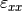, 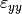, and 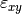 strain fields produced by the FEmodel.
getPlot(y[0, ..., 0], title='FE Calculated xx-Strain Field', fontsize=15)
getPlot(y[0, ..., 1], title='FE Calculated yy-Strain Field', fontsize=15)
getPlot(y[0, ..., 2], title='FE Calculated xy-Strain Field', fontsize=15)
Create an instance of MKSRegressionModel with the number of bins Nbin equal to 2.
from pymks import MKSRegressionModel
MKSmodel = MKSRegressionModel(Nbin=2)
The rest of this example will only use the strain field, but the others can be calculated using obvious substitutions.
The first order influence coefficients can be calibrated by passing the microstructure and the calculated strain field from the FE simulation and as arguments into the fit() method.
MKSmodel.fit(Delta, y[..., 0])
Let’s take a look at the influence coefficients.
getPlot(MKSmodel.coeff[..., 0], 'Influence Coefficients 1', fontsize=20)
getPlot(MKSmodel.coeff[..., 1], 'Influence Coefficients 2' , fontsize=20)
/home/dbb1/anaconda/lib/python2.7/site-packages/matplotlib/colorbar.py:829: RuntimeWarning: invalid value encountered in divide
z = np.take(y, i0) + (xn - np.take(b, i0)) * dy / db
/home/dbb1/anaconda/lib/python2.7/site-packages/matplotlib/colorbar.py:581: RuntimeWarning: invalid value encountered in greater
inrange = (ticks > -0.001) & (ticks < 1.001)
/home/dbb1/anaconda/lib/python2.7/site-packages/matplotlib/colorbar.py:581: RuntimeWarning: invalid value encountered in less
inrange = (ticks > -0.001) & (ticks < 1.001)
The first set of influence coefficients have a Gaussian shape while the second influence coefficients are constant-valued. The constant-valued influence coefficients may seem superfluous, but are analogous to the constant value found doing multiple linear regression with categorical variables.
Now let’s use the calibrated influence coefficients to compute the local strain response for a random two phase microstructure. First create a random microstructure.
np.random.seed(101)
RandMicro = np.random.randint(2, size=(1, L, L))
getPlot(RandMicro[0], 'Random Microstructure', fontsize=18)
Create a property array that assigns the Young’s modulus E and the Possion’s ratio nu for both of the phases.
RandMicro_prop = getProp(RandMicro)
Compute the local strain field for the random microstructure using the FE model.
yFE = FEmodel.predict(RandMicro_prop)
getPlot(yFE[0,...,0], 'FE Computed Local Strain Field', fontsize=15)
sfepy: matrix shape: (3527, 3527)
sfepy: assembling matrix graph...
sfepy: ...done in 0.01 s
sfepy: matrix structural nonzeros: 109823 (8.83e-03% fill)
The local strain field can be computed by passing the random microstructure as an argument to the predict() method of the MKS model.
yMKS = MKSmodel.predict(RandMicro)
getPlot(yMKS[0], 'MKS Computed Local Strain Field', fontsize=15)
Calculate the mean absolute error.
Error = np.abs((yMKS[0] - yFE[0, ..., 0]) / yFE[0, ..., 0] * 100)
print 'Mean Absolute % Error', np.average(Error)
getPlot(Error, 'Absolute % Error')
Mean Absolute % Error 1.41851652896
It has been shown that the coefficients calibrated on a smaller microstructure can be used on a larger micorsturture though spectral interpolation [3]. To demonstrate this let’s generate a new larger random microstructure and its propetry matrix.
N = 3 * L
BigRandMicro = np.random.randint(2, size=(1, N, N))
BigRandMicro_prop = getProp(BigRandMicro)
getPlot(BigRandMicro[0], 'Large Microstructure')
Compute the strain field for the new microstructure using the instance of ElasticFEModel we already have.
yFEbig = FEmodel.predict(BigRandMicro_prop)
getPlot(FEmodel.predict(BigRandMicro_prop)[0, ..., 0], 'FE Computed Local Strain Field', fontsize=15)
sfepy: matrix shape: (31751, 31751)
sfepy: assembling matrix graph...
sfepy: ...done in 0.07 s
sfepy: matrix structural nonzeros: 1006943 (9.99e-04% fill)
sfepy: matrix shape: (31751, 31751)
sfepy: assembling matrix graph...
sfepy: ...done in 0.07 s
sfepy: matrix structural nonzeros: 1006943 (9.99e-04% fill)
The coefficients that have already been calibrated need to be resized to match the shape of the new larger microstructure.
MKSmodel.resize_coeff(BigRandMicro[0].shape)
yMKSbig = MKSmodel.predict(BigRandMicro)
getPlot(yMKSbig[0], 'MKS Computed Local Strain Field', fontsize=15)
(1+0j)
(1+0j)

Calculate the error between the FE model and the MKS model.
ErrorBig = np.abs((yMKSbig[0] - yFEbig[0, ..., 0]) / yFEbig[0, ..., 0] * 100)
print 'Mean Absolute % Error', np.average(ErrorBig),'%'
getPlot(ErrorBig, 'Absolute % Error')
Mean Absolute % Error 1.67533988698 %
The error for original by microstructure is smaller than the error for the larger microstructure as is expected when using spectral interpolation [4].
for establishing localization relationships for elastic behav ior of composites and their calibration to finite-element models* <http://ac.els-cdn.com/S1359645408000475/1-s2.0-S1359645408000475-main.pdf?_tid=8a22a430-e83d-11e3-b21e-00000aab0f26&acdnat=1401483856_13e0e9036d72ed68934ce00f70b122a6>`__. Acta Materialia, 2008. 56 (10): p. 2272-2282.
elastic response of three-dimensional voxel-based microstructure datasets using novel DFT-based knowledge systems* <http://www.sciencedirect.com/science/article/pii/S1359645410000108>`__. Acta Materialia, 2009. 58 (7): p. 2716-2725.
database and spectral interpolation for fully plastic Taylor-type crystal plasticity calculations of face-centered cubic polycrystals* <http://www.sciencedirect.com/science/article/pii/S0749641907001702>`__. International Journal of Plasticity 24 (2008) 1264–1276.
simulations using discrete Fourier transforms* <http://www.sciencedirect.com/science/article/pii/S1359645408008902>`__. Acta Materialia 57 (2009) 1777–1784.